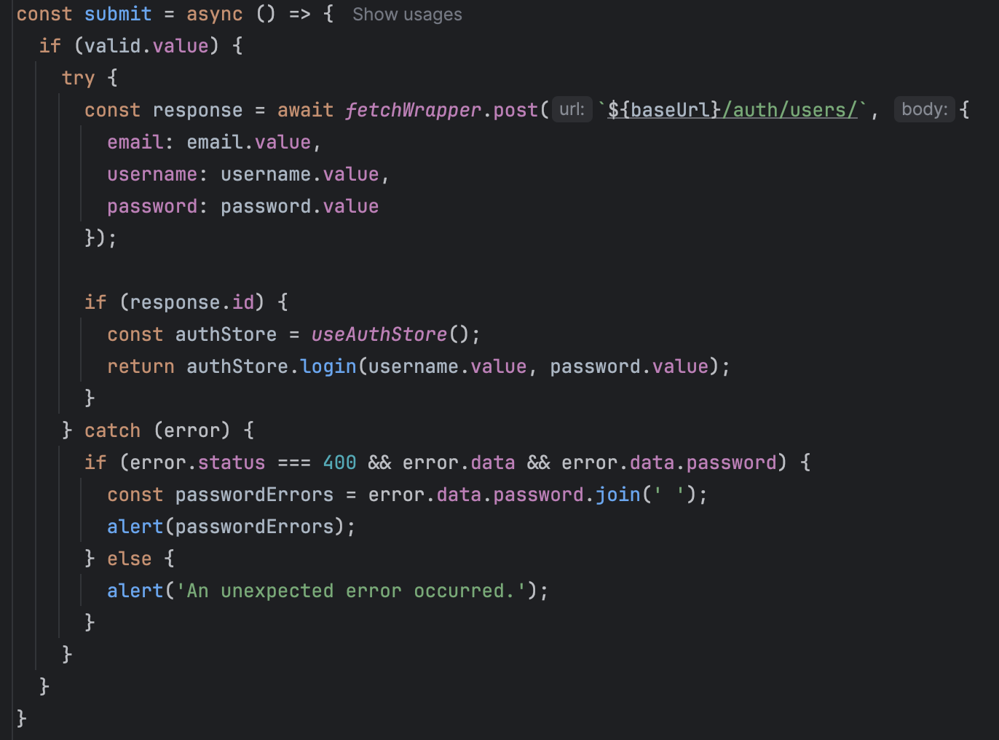
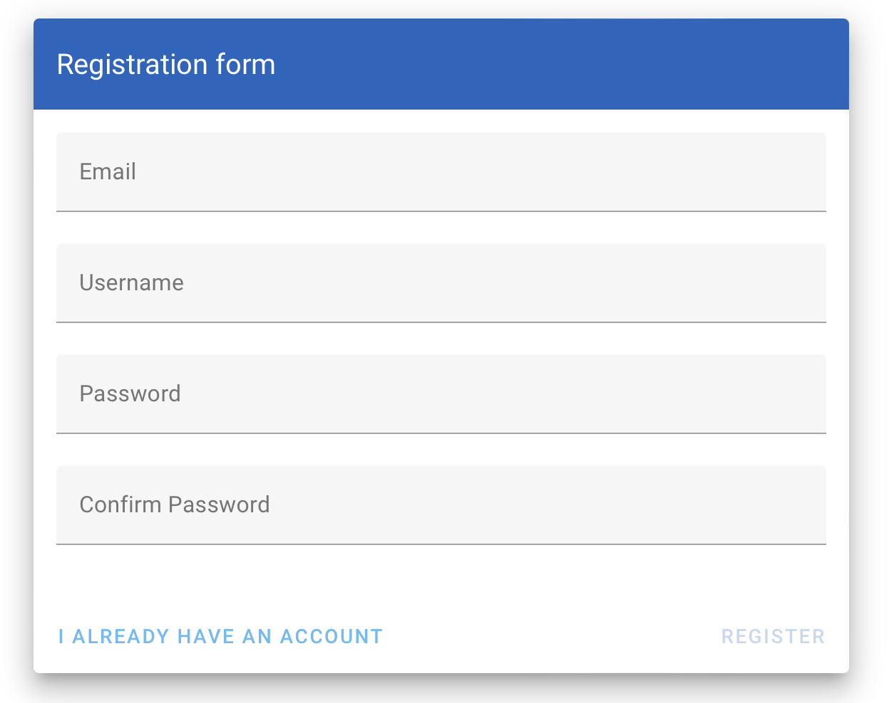
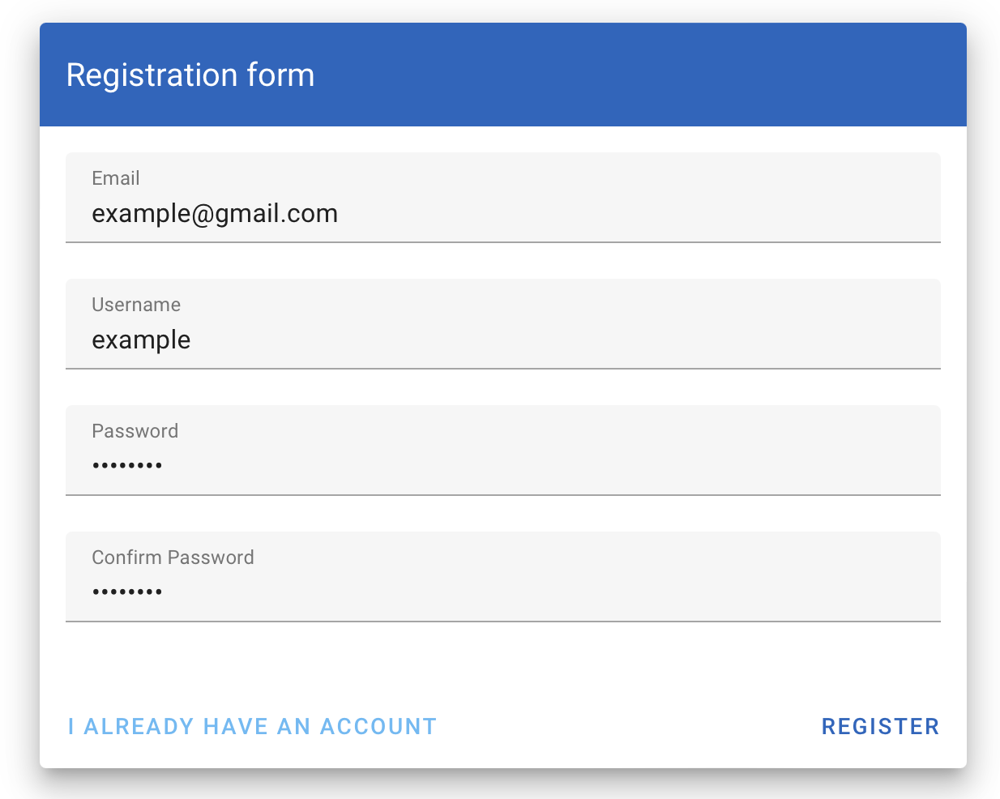
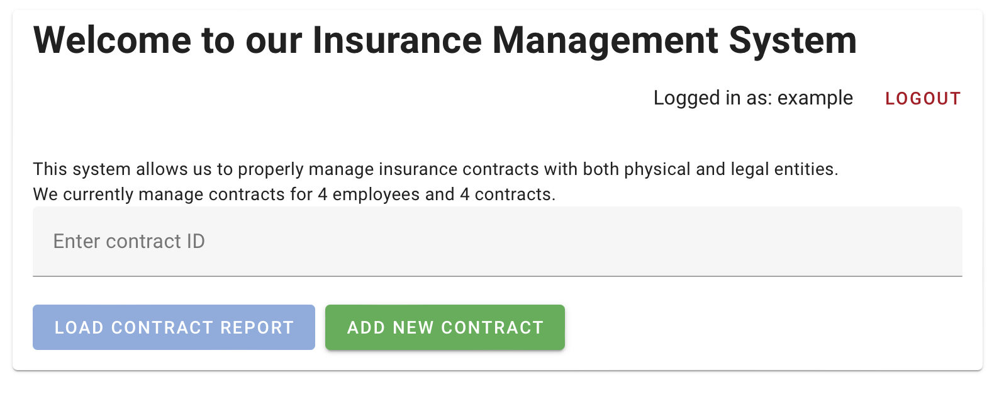
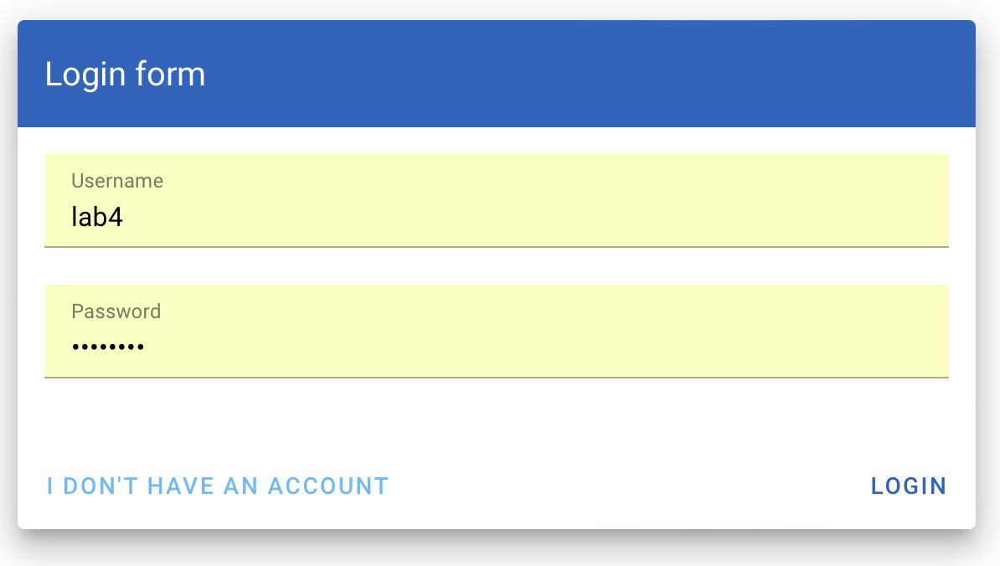
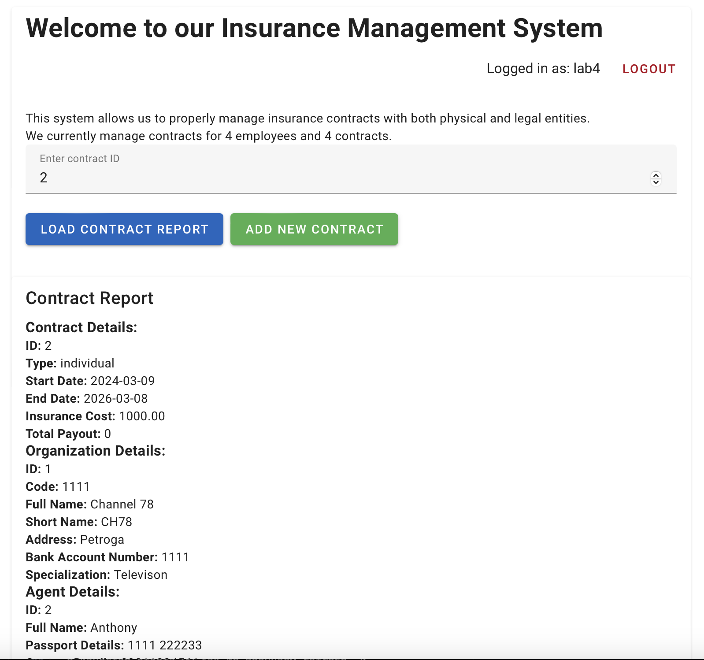
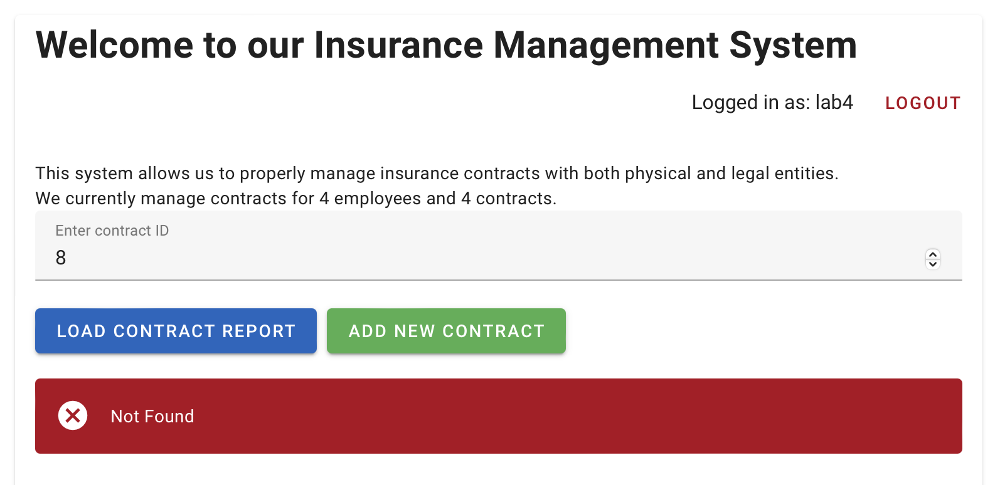
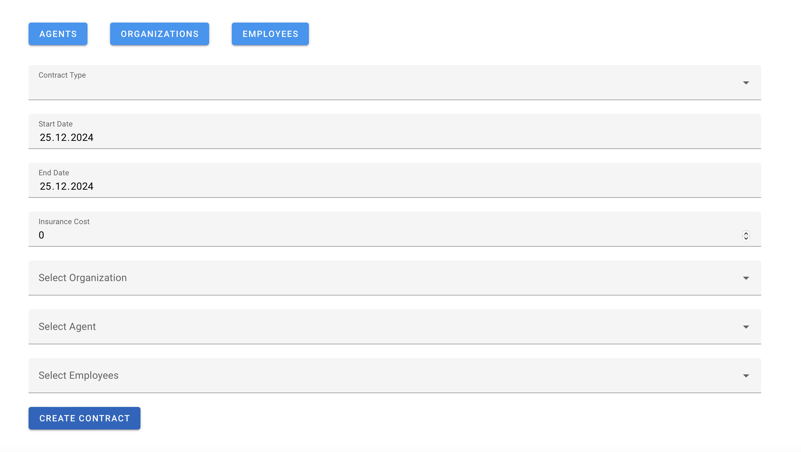

Лабораторная работа № 4
Задание
Реализовать клиентскую часть приложения средствами vue.js.
Выполнение
Backend
В предыдущей лабораторной работе регистрация и авторизация реализовывались с помощью JWT. Для создания нового пользователя необходимо послать запрос в формате JSON:
{
"email": "<email>",
"username": "<username>",
"password": "<password>"
}
Запрос отсылается на эндпоинт /auth/users/. В качестве ответа мы получаем либо refresh- и access-токены, либо сообщение о некорректно введённых полях.
Frontend
Логика получения токенов как результат соответствующего запроса реализована в stores/auth.store.js: сервис получает access и refresh токены, хранит их локально и прикрепляет access-токен к запросам.
Интерфейс реализован с помощью фреймворка Vue.js и библиотеки vuetify. Ниже приведена структура компонента регистрации RegisterComponent.vue
Скрипт:
- Импорты:
ref из Vue.js для реактивности. fetchWrapper для HTTP-запросов. useAuthStore для управления состоянием аутентификации.
- Переменные:
email, username, password, confirmPassword для хранения данных формы. valid для валидации формы.
- Правила Валидации:
emailRules, usernameRules, passwordRules, confirmPasswordRules для валидации данных формы.
- Функция submit:
Отправляет запрос на регистрацию и обрабатывает ответ.

- Разметка:
Использует Vuetify компоненты (v-container, v-row, v-col, v-card и др.) для создания формы регистрации. Включает текстовые поля для ввода данных пользователя. Кнопки для отправки формы и перехода на страницу входа.
Логика Работы:
-
Ввод данных: Пользователь вводит данные в поля формы.
-
Валидация: Автоматическая проверка корректности данных.
-
Отправка данных: По нажатию кнопки "Register", данные отправляются на сервер.
-
Обработка ответа: В случае успешной регистрации, происходит вход пользователя в систему.
Стилизация компонента выполняется с использованием Vuetify и локальных стилей.
Работа сервиса в скринах:



Авторизация
Backend
Для авторизации, аналогично регистрации, необходимо отправить запрос на эндпоинт /auth/jwt/create/:
{
"username": "
В качестве ответа мы так же получаем refresh- и access-токены, которые сохраняются локально.
Frontend
Логика фронтенда реализована аналогично разделу регистрации.
Скрипт:
- Импорты:
ref из Vue.js для создания реактивных переменных. useAuthStore для взаимодействия с состоянием аутентификации.
-Переменные:
username и password для хранения данных входа. valid для контроля состояния валидации формы.
- Правила Валидации:
usernameRules и passwordRules для проверки корректности введенных данных.
- Функция submit:
Обрабатывает процесс входа и отображает ошибки при неудаче.
- Разметка:
Разметка использует Vuetify компоненты для построения формы входа. Включает поля для ввода имени пользователя и пароля. Кнопки для входа и перехода к регистрации.
Логика Работы:
- Ввод данных: Пользователь вводит имя пользователя и пароль.
- Валидация: Автоматическая проверка введенных данных.
- Отправка данных: При нажатии на кнопку "Login", происходит попытка входа.
- Обработка ошибок: В случае ошибки, пользователю отображается соответствующее уведомление.
- Стилизация: cтраница стилизована с помощью Vuetify и локальных стилей.

Главная страница
Функционал – формирование договоров
Backend
На главной странице реализован функционал получения отчёта по контракту, а также небольшая статистика по текущим договорам. Статистика реализована с помощью получения соответствующих списков c эндпоинтов /contracts/ и /employers и взятия их длины. Для получения отчёта по конкретному номеру (id) контракта реализован специальный эндпоинт /contracts/report/
Frontend
Скрипт:
- Импорты:
ref, onMounted из Vue.js для реактивности и жизненного цикла компонента. fetchWrapper для HTTP-запросов. useAuthStore для управления аутентификацией.
- Переменные и Данные:
numEmployees, numContracts, contractId, report, username, errorMsg для хранения данных системы.
- Функции:
loadReport для загрузки отчета по контракту. logout для выхода из системы. formatReportForDataTable для форматирования отчета.
- Сайд-эффекты:
onMounted для инициализации данных пользователя, сотрудников и контрактов при монтировании.
- Разметка:
Использует Vuetify компоненты для построения интерфейса. Включает информационные блоки, поля ввода и кнопки для управления системой. Отображение отчетов по контрактам с детализированной информацией.
Логика Работы:
- Инициализация: Загрузка данных о пользователях, сотрудниках и контрактах.
- Управление: Пользователи могут вводить ID контракта для загрузки отчета.
- Обработка и Отображение Отчетов: Отчеты отображаются с детальной информацией о контрактах, организациях и страховых случаях.
- Стилизация: использование Vuetify и локальных стилей для создания читаемого и привлекательного интерфейса.

Если пользователь вводит номер несуществующего договора, сервис возвращает сообщение об ошибке:

Добавление новых договоров
Backend
Добавлять новые договоры может только менеджер, имеющий соответствующее разрешение (в рамках лабораторной работы — член группы staff). Добавление договора происходит с помощью POST-запроса на эндпоинт /contracts/. Задача фронтенда — преобразовать человекочитаемые названия объектов в соответствующие id.
Frontend
Скрипт:
- Импорты:
computed, ref, watch из Vue.js для реактивности. fetchWrapper для выполнения HTTP-запросов. useRouter для навигации.
- Основные Переменные:
contract, organizations, agents, employees для хранения данных формы и связанных сущностей.
- Функции:
loadData для загрузки данных организаций, агентов и сотрудников. submitContract для отправки данных контракта. filteredEmployees для фильтрации сотрудников в соответствии с выбранной организацией.
- Наблюдатели (watchers):
Отслеживание изменений в выборе организации для обновления списка сотрудников.
- Разметка:
Форма для создания контракта с использованием Vuetify компонентов. Включает в себя поля для выбора типа контракта, даты начала и окончания, стоимости страховки, а также выбора организации, агента и сотрудников.
Логика работы:
- Инициализация: Загрузка данных организаций, агентов и сотрудников при загрузке компонента.
- Ввод данных: Пользователь вводит или выбирает необходимые данные для создания контракта.
- Фильтрация сотрудников: Основываясь на выбранной организации, предлагается соответствующий список сотрудников.
- Отправка формы: По нажатию кнопки отправки, данные контракта передаются на сервер.
- Стилизация: использование Vuetify для создания привлекательного и функционального интерфейса формы.
